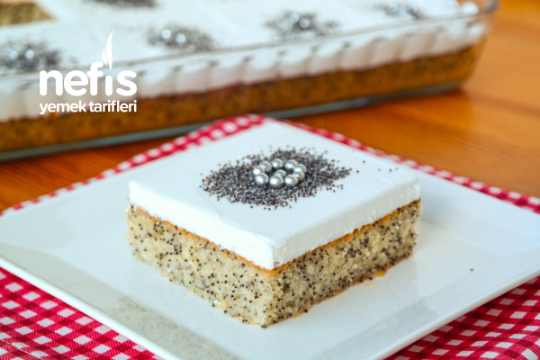
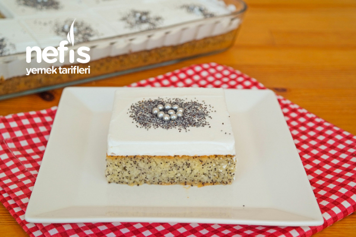

Revani severek tükettiğimiz şerbetli tatlılarımızdandır. Yemekler yendikten sonra ele alınan çayların yanına en çok yakışan revanidir. Revani tatlısı Osmanlı döneminde Ermenistan ve Erivan’ın fethedilmesi şerefine yapılan tatlıdır. Bu kadar güzel bir olayın sevincini yansıtan tatlı bizim içinde çok değerlidir.Revani sade yapıldığı gibi haşhaşlı da yapılabilmektedir. Her şekilde lezzetli olan revani tatlısını henüz denememişseniz mutlaka denemelisiniz. Tarifimi denemeyi ve defterinize eklemeyi unutmayın.
Tarif: Özkan ERGÜDER


Haşhaşlı Revani Tarifi İçin Malzemeler
- 350 gr bitter çikolata
- 150 ml krema
- 1 çorba kaşığı tereyağı
- 150 gr şamfıstık (badem veya fındık da olabilir)
Haşhaşlı Revani Nasıl Yapılır?
- Yumurta ve şekeri köpük köpük olana kadar çırpın.
- Ardından süt ve sıvı yağı ilave edin ve karıştırın.
- Sonra irmik, un ve haşhaşı ekleyin.
- Karıştırdıktan sonra kabartma tozu ve vanilyayı ekleyerek iyice çırpın ve yağlanmış tepsiye dökün.
- Önceden ısıtılmış 170 derece fırında pişirin.
- Şerbeti için şeker ve suyu kaynatın.
- 1-2 dk kaynadıktan sonra altını kapatın.
- Altını kapattıktan sonra ilk sıcaklığın geçmesini bekleyin.
- Daha sonra soğumuş olan kekin üzerine şerbeti dökün.
- En son olarak üzerine krema veya krem şanti sürün.
- Krem şanti için süt ve toz şanti iyice çırpılır ve buzdolabında 15-20 dk beklettikten sonra kekin üzerine sürülür.
- Krema içinse “Gazozlu Kek” tarifimde yapmış olduğum kremayı kullanabilirsiniz. Ben bu kremayı öneririm, çok daha güzel oluyor. Benim vaktim olmadığı için krema yapamadım, krem şanti sürdüm.
- Krema sürdükten sonra üzerine haşhaş serpip servis yapın.